#10384 Waterloo
Auszeichnungen: 2 BAFTA-Awards gewonnen
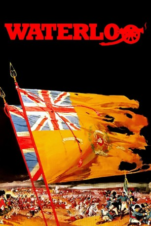 
 IMDB-Wertung: 7.3 / 10
IMDB-Wertung: 7.3 / 10  Tomatometer: 33
Tomatometer: 33  Metascore: 0
Metascore: 0 
Im Jahr 1815 entkommt der ehemalige französische Kaiser Napoleon aus seinem Exil Elba, nachdem man ihn nach den langen Kriegen, dem fatalen Rußlandkreuzzug und der Niederlage bei Leipzig dorthin verbannt hatte. Überraschenderweise schafft es der Ex-Imperator, die Armee wieder auf seine Seite zu ziehen und gegen den König Louis ziehen zu lassen. Der bittet jedoch ganz Europa zu Hilfe und Arthur Wellesly, Duke of Wellington macht sich mit einer zusammengewürfelten Armee aus mehreren Ländern an die Verteidigung.Auf dem Schlachtfeld von Waterloo muß sich das Schicksal Europas schließlich endgültig entscheiden, als beide Parteien aufeinandertreffen...
Jahr: 1970
Dauer: 127 Minuten
FSK: 12
Land: Italien Studio: Columbia Pictures CorporationTonspuren:
Untertitel:
Auflösung: 720p (1280x720) Größe: 10147 MB
Genre: Action, Drama, Krieg, Geschichte, Biographie
Regisseur: Sergey Bondarchuk
Drehbuch: H.A.L. Craig, Sergey Bondarchuk, Vittorio Bonicelli, Mario Soldati
Soundtrack: Nino Rota
Darsteller:
- 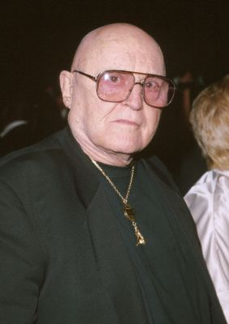 Rod Steiger als Napoleon Bonaparte
- 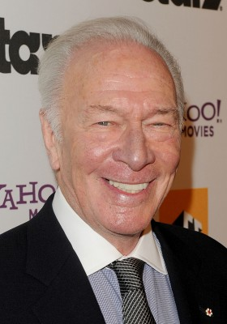 Christopher Plummer als Arthur Wellesley - Duke of Wellington
- 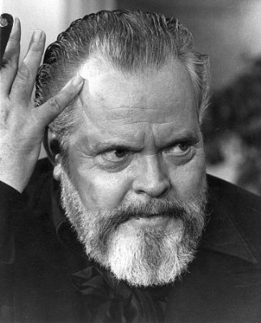 Orson Welles als Louis XVIII
- 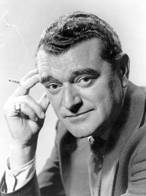 Jack Hawkins als Gen. Sir Thomas Picton
- Virginia McKenna als Duchess of Richmond
- 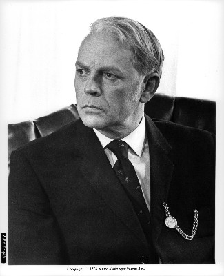 Dan O'Herlihy als Marshal Michel Ney
- Rupert Davies als Gordon
- Philippe Forquet als La Bedoyere
 Gianni Garko als Drouot
Gianni Garko als Drouot- Ian Ogilvy als De Lancey
- Michael Wilding als Ponsonby
- Terence Alexander als Uxbridge
- 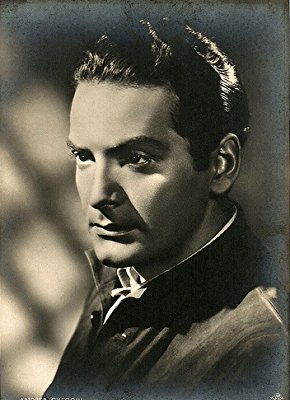 Andrea Checchi als Sauret
- Donal Donnelly als O'Connor
- Evgeniy Samoylov als Cambronne
- 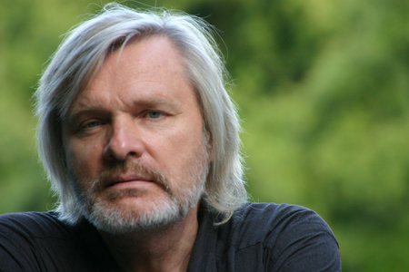 Oleg Vidov als Tomlinson
- Veronica De Laurentiis als Magdalene Hall
- Vladimir Druzhnikov als Gerard
- Willoughby Gray als Ramsey
- 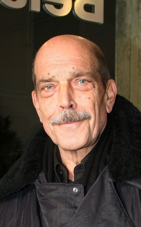 Orso Maria Guerrini als Officer
- Richard Heffer als Mercer
- Orazio Orlando als Constant
- 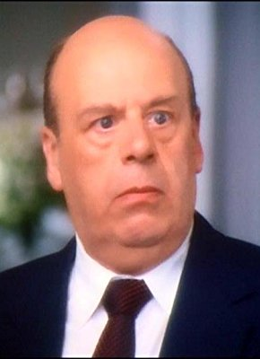 John Savident als Muffling
- Gennadi Yudin als Chactas
- Armando Bottin als Legros (uncredited)
- Pauls Butkevics als Officer with Wellington (uncredited)
- 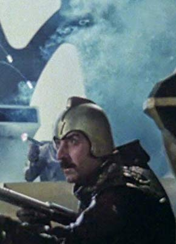 Omero Capanna als Soldier (uncredited)
- Roger Delgado als Marshal Soult (uncredited) (unconfirmed)
- Valery Guryev als Fainting Soldier (uncredited)
- Vasiliy Livanov als Percy (uncredited)
- Oleg Mikhajlov als (uncredited)
- Aleksandr Parkhomenko als Wounded Officer (uncredited)
- Lev Polyakov als Kellerman (uncredited)
- Giuliano Raffaelli als McDonald (uncredited)
- Georgi Rybakov als Taylor (uncredited)
- Vladimir Shakalo als Episode (uncredited)
- Irina Skobtseva als Maria (uncredited)
- Valentins Skulme als Tamburo Maggione (uncredited)
- Yan Yanakiyev als Larrey (uncredited)
- Rostislav Yankovskiy als Flahaut (uncredited)
- Igor Yasulovich als Officer of the 13 Square (uncredited)
- Andrei Yurenyov als Corporal (uncredited)
- Ivo Garrani als Soult
- Sergo Zakariadze als Blucher
- Charles Millot als Grouchy
- Charles Borromel als Mulholland
- Peter Davies als Lord Hay
- Roger Green als Duncan
- Jeffry Wickham als Colborne
- Susan Wood als Sarah
Datei: X:\1970\Waterloo (1970, FSK12, 1280x720).mkv seit 02.01.2019
Festplatte: Gemischt-01+Anime
 Es gibt insgesamt 24 Filme in der Gruppe '1970'
Es gibt insgesamt 24 Filme in der Gruppe '1970'